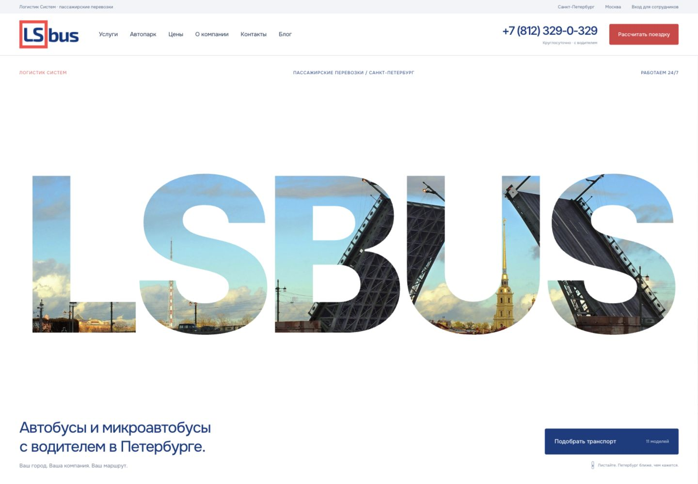
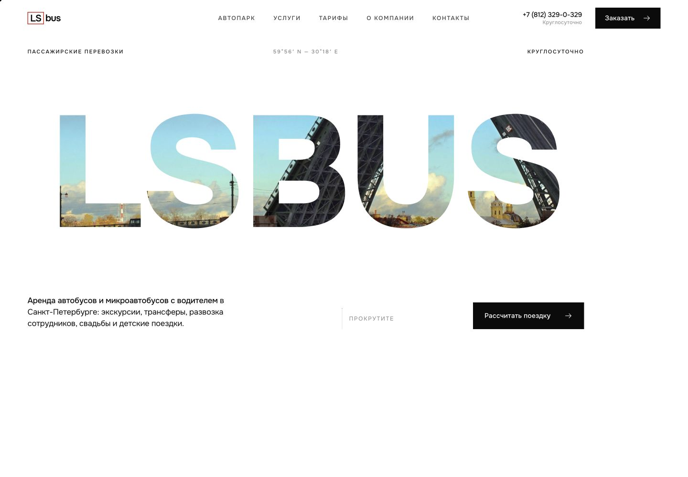
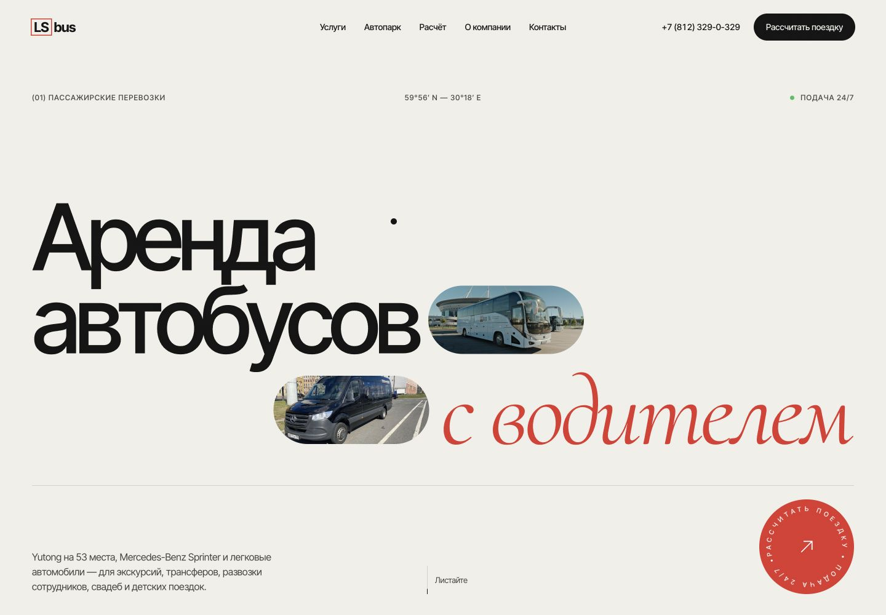

01 / РАЗВИТИЕ ОСНОВНОГО САЙТАПетербург. С водителем.
Фирменные синий и красный, Дворцовый мост, шесть услуг, практичный автопарк и открытые тарифы.
Главная и карточка транспорта в каждом направлении.
Это концепции для обсуждения: содержание, условия и работу с заявками согласуем отдельно.

01 / РАЗВИТИЕ ОСНОВНОГО САЙТАФирменные синий и красный, Дворцовый мост, шесть услуг, практичный автопарк и открытые тарифы.

02 / БЕЛЫЙКинематографичный первый экран, пролёт сквозь буквы, анимированный шоурум и раскрытие салона.

03 / РЕДАКЦИОННЫЙТёплый фон, выразительная типографика с красным курсивом, фотографии в строках и горизонтальный автопарк.